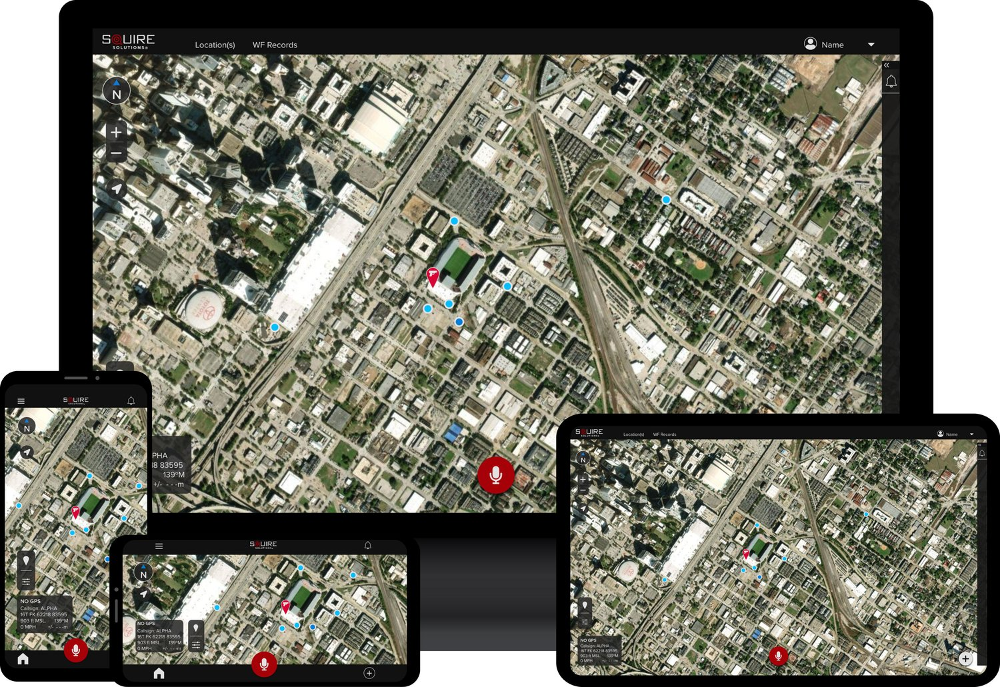
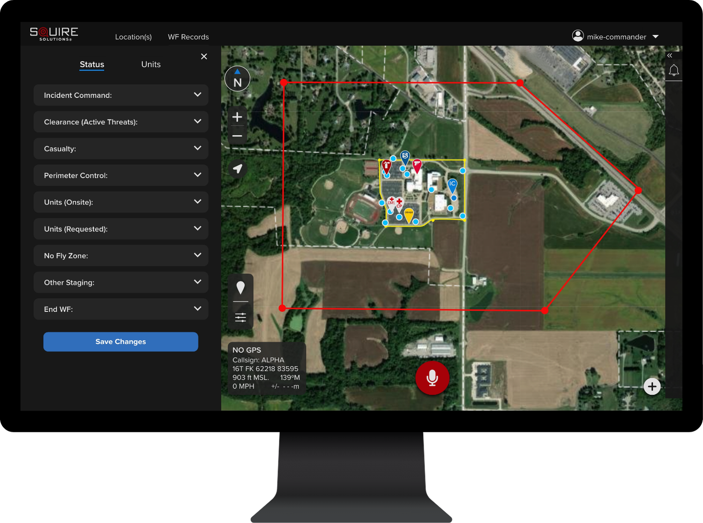
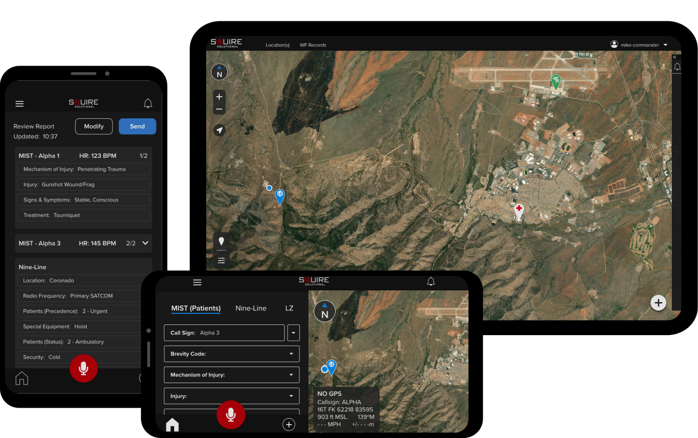
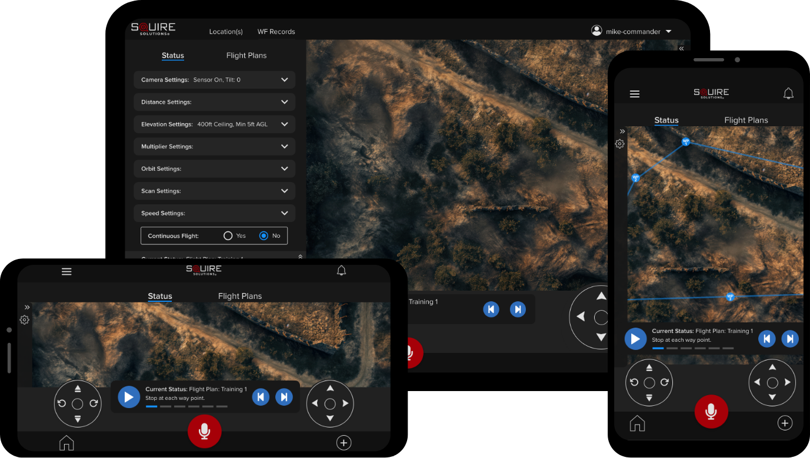

// CASE STUDY // SQUIRE SOLUTIONS
Built for Clarity. Designed for the Mission.
Crafting intuitive, high-stakes interfaces for military and public safety users where every second counts and every detail matters.
// MY ROLE
Bridging strategy, design, and delivery to build trusted systems that perform under pressure.

UX & Product Design
- Visual Design & High-Fidelity Prototyping
- Interaction Design & Detail Workflows
- Design Systems & UI Consistency
- Information Architecture & Content Structure
- Persona Creation & Story Mapping
- End-to-End Product Experience
Cross-Functional Execution
- Coordinating with Engineering & Product Teams
- Handing off Robust Development Specs
- Iterating Rapidly and Shipping Efficiently
- Maintaining Communication & Alignment Across Teams
Strategy & Leadership
- Strategy & Mission Alignment
- Problem Definition (Why / What)
- Prioritization & Resource Planning
- Project Management & Deadline Ownership
- Driving Coordination & Execution
- Advocacy: User & Business
- Team Alignment & Gap Coverage
Research & Usability
- User Research & Problem Discovery
- Usability Testing & Iteration
- Solution Framing: Problem > How > Outcome

// MODULE 01
Active Shooter Workflow Application
Coordinated response in seconds, not minutes.
Squire's Active Shooter Module gives real-time visibility to law enforcement during critical incidents. Teams can track shooter movement, unit positions, and manage response workflows directly in the field.
With live mapping, perimeter tools, and integrated command features, responders minimize radio traffic, improve coordination across agencies, and save critical minutes when it matters most.
40%
Response Time Reduction
Decrease in incident response times by up to 40%, allowing teams to neutralize threats faster.
30%
Improved Inter-Agency Coordination
Increase in coordination efficiency among law enforcement, SWAT, EMS, and fire departments.
30%
Radio Traffic Reduction
Reduction in non-essential radio communication, freeing up channels for critical updates.
50%
Casualty Management Efficiency
Faster EMS response to casualty collection points, improving survival rates.
100%
Perimeter Security Accuracy
Real-time accuracy in establishing and adjusting secure perimeters for improved containment.
These measurable KPIs demonstrate the value Squire's Active Shooter Module brings to law enforcement, ensuring faster, more effective, and coordinated responses that save lives during high-risk situations.
// MODULE 02
MEDEVAC Module
Every second counts. Make each one matter.
The MEDEVAC Module transforms the speed and accuracy of battlefield medical evacuations by reducing response times from minutes to seconds.
By eliminating information gaps and minimizing human error, Squire ensures faster deployment, accurate medical decision-making, and optimized use of the golden hour; when lives are most at risk.

Time to MEDEVAC Launch
Before: an average of 22.7 minutes
With Squire: less than 1 minute
<1 min
-
Error Reduction
Virtually eliminates human error due to automated transmission of critical data.
-
Golden Hour Utilization
Maximizes available time for medical care by streamlining the entire MEDEVAC request process.
-
Communication Efficiency
Provides uninterrupted, real-time data sharing between teams in the field and command, reducing confusion and miscommunication.
-
Biometric Tracking
Continuously monitors patient vitals, allowing for faster and more accurate medical decision-making.

// MODULE 03
UAS Module
Faster response, broader coverage, and higher mission success rates.
The UAS Module revolutionizes how operators interact with drones by shifting from a 1:1 control model to a 1:Many system. The platform enables seamless, semi-autonomous drone behaviors, allowing operators to manage multiple drones simultaneously while maintaining full situational awareness.
Operators can control, monitor, and modify drone behaviors on the fly, ensuring faster, more effective mission outcomes.
Targets the module is measured against
TARGET
80%
Response Time Efficiency
Reduce time to deploy multiple drones, compared to traditional single-drone control.
TARGET
1:Many
Operational Coverage
Expand operator capabilities to control many drones per operator seamlessly.
TARGET
90%
Error Reduction
Decrease operational errors in drone mission control and sensor management through AI-enhanced autonomous behaviors.
TARGET
100%
Situational Awareness
Ensure every operator maintains full situational awareness of all drones, with critical updates in real time.
TARGET
95%
Mission Success Rate
Achieve a 95% success rate in mission execution using drone swarms.
TARGET
90%
Airspace Deconfliction
Reduce airspace conflicts through seamless deconfliction and prioritization of drone swarms.
These KPIs track the effectiveness of Squire's UAS Module in transforming drone operations, increasing efficiency, reducing errors, and maximizing mission success.